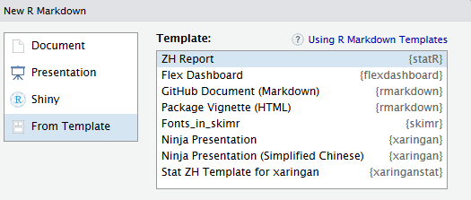

Alpha-Version
Das statR-Package enthält ein Template für html-Berichte, die dem kantonalen Corporate Design entsprechen.
Dieses ist in R Studio im Menü unter ‘File > New File > R Markdown’ verfügbar.

Auswahl des Templates
Im Auswahlfenster kann das ZH Report-Template ausgewählt werden.

zh-Report

sample zh-Report